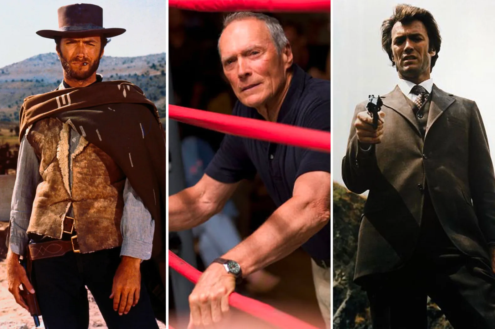

Clint Eastwood
Clinton Eastwood Jr. (born May 31, 1930) is an American actor and film director. After achieving success in the Western TV series Rawhide, Eastwood rose to international fame with his role as the "Man with No Name" in Sergio Leone's Dollars Trilogy of spaghetti Westerns during the mid-1960s and as antihero cop Harry Callahan in the five Dirty Harry films throughout the 1970s and 1980s. These roles, among others, have made Eastwood an enduring cultural icon of masculinity.[4][5] Elected in 1986, Eastwood served for two years as the mayor of Carmel-by-the-Sea, California. Eastwood's greatest commercial successes are the adventure comedy Every Which Way but Loose (1978) and its action comedy sequel Any Which Way You Can (1980).[6] Other popular Eastwood films include the Westerns Hang 'Em High (1968), The Outlaw Josey Wales (1976) and Pale Rider (1985), the action-war film Where Eagles Dare (1968), the prison film Escape from Alcatraz (1979), the war film Heartbreak Ridge (1986), the action film In the Line of Fire (1993), and the romantic drama The Bridges of Madison County (1995). More recent works include Gran Torino (2008), The Mule (2018), and Cry Macho (2021). Since 1967, Eastwood's company Malpaso Productions has produced all but four of his American films. An Academy Award nominee for Best Actor, Eastwood won Best Director and Best Picture for his Western film Unforgiven (1992) and his sports drama Million Dollar Baby (2004). In addition to directing many of his own star vehicles, Eastwood has directed films in which he did not appear, such as the mystery drama Mystic River (2003) and the war film Letters from Iwo Jima (2006), for which he received Academy Award nominations. He also directed the biographical films Changeling (2008), Invictus (2009), American Sniper (2014), Sully (2016), and Richard Jewell (2019). Eastwood's accolades include four Academy Awards, four Golden Globe Awards, three César Awards, and an AFI Life Achievement Award. In 2000, he received the Italian Venice Film Festival's Golden Lion award, honoring his lifetime achievements. Bestowed two of France's highest civilian honors, he received the Commander of the Ordre des Arts et des Lettres in 1994, and the Legion of Honour in 2007.
Career
According to a CBS press release for Rawhide, Universal-International's camera crew was shooting in Fort Ord when an enterprising assistant spotted Eastwood and invited him to meet the director,[34] although this is disputed by Eastwood's unauthorized biographer, Patrick McGilligan.[35] According to Eastwood's official biography, the key figure was a man named Chuck Hill, who was stationed in Fort Ord and had contacts in Hollywood.[34] While in Los Angeles, Hill became reacquainted with Eastwood and managed to sneak him into a Universal studio, where he introduced him to cameraman Irving Glassberg.[34] Glassberg arranged for an audition under Arthur Lubin, who, although very impressed with Eastwood's appearance and stature (then 6 ft 4 in [193 cm]), disapproved of his acting, remarking, "He was quite amateurish. He didn't know which way to turn or which way to go or do anything."[36] Lubin suggested that he attend drama classes and arranged for Eastwood's initial contract in April 1954, at $100 per week.[36] After signing, Eastwood was initially criticized for his stiff manner and delivering his lines through his teeth, a lifelong trademark.[37] In May 1954, Eastwood made his first real audition for Six Bridges to Cross, but was rejected by Joseph Pevney.[38] After many unsuccessful auditions, he was eventually given a minor role by director Jack Arnold in Revenge of the Creature (1955), a sequel to the recently released Creature from the Black Lagoon.[39] In September 1954, Eastwood worked for three weeks on Arthur Lubin's Lady Godiva of Coventry, won a role in February 1955, playing "Jonesy", a sailor in Francis in the Navy and appeared uncredited in another Jack Arnold film, Tarantula, where he played a squadron pilot.[40][41] In May 1955, Eastwood put four hours' work into the film Never Say Goodbye and had a minor uncredited role as a ranch hand (his first western film) in August 1955 with Law Man, also known as Star in the Dust, starring John Agar and Mamie Van Doren.[42] Universal presented him with his first television role on July 2, 1955, on NBC's Allen in Movieland, which starred comedian Steve Allen, actor Tony Curtis, and swing musician Benny Goodman.[43] Although he continued to develop as an actor, Universal terminated his contract on October 23, 1955.[44] Eastwood joined the Marsh Agency, and although Lubin landed him his biggest role to date in The First Traveling Saleslady (1956) and later hired him for Escapade in Japan (1957), without a formal contract, Eastwood was struggling.[45] On his financial advisor Irving Leonard's advice, he switched to the Kumin-Olenick Agency in 1956 and Mitchell Gertz in 1957. He landed several small roles in 1956 as a temperamental army officer for a segment of ABC's Reader's Digest series, and as a motorcycle gang member on a Highway Patrol episode.[45] In 1957, Eastwood played a cadet in West Point series and a suicidal gold prospector on Death Valley Days. In 1958, he played a Navy lieutenant in a segment of Navy Log and in early 1959 made a notable guest appearance as Red Hardigan on Maverick opposite James Garner as a cowardly villain intent on marrying a rich girl for money.[46] Eastwood had a small part as an aviator in Lafayette Escadrille (1958) and played a major role as an ex-renegade of the Confederacy in Ambush at Cimarron Pass (also 1958): a film that Eastwood considers the low point of his career.